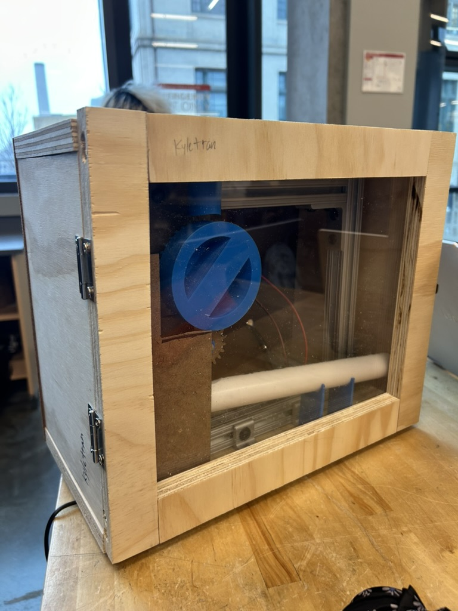
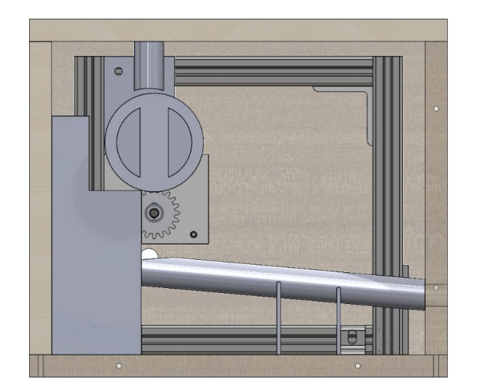
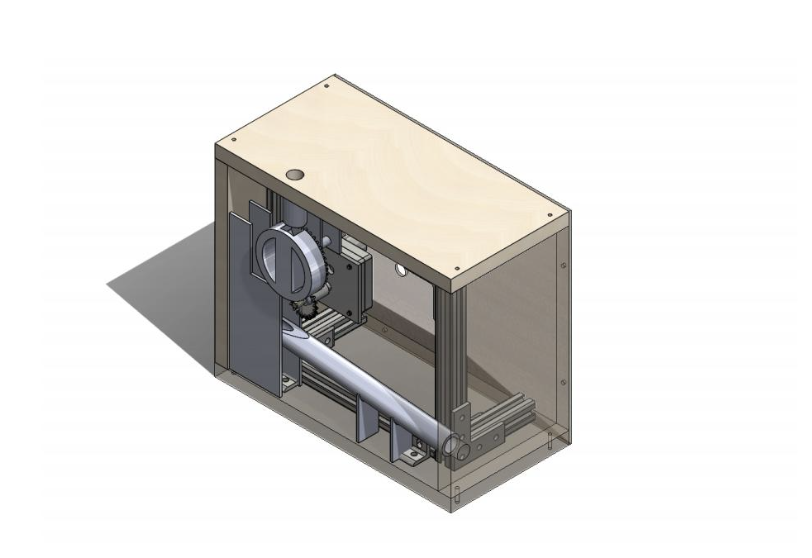
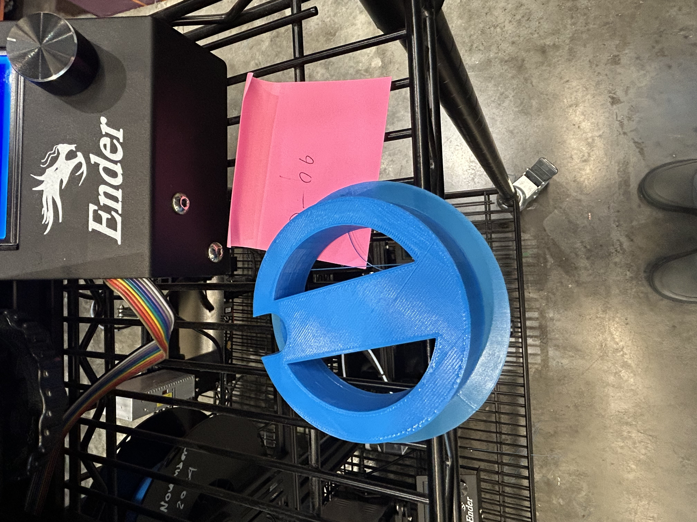
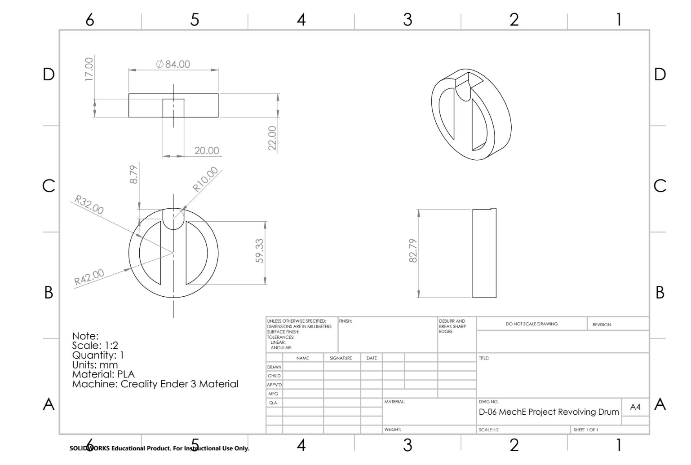
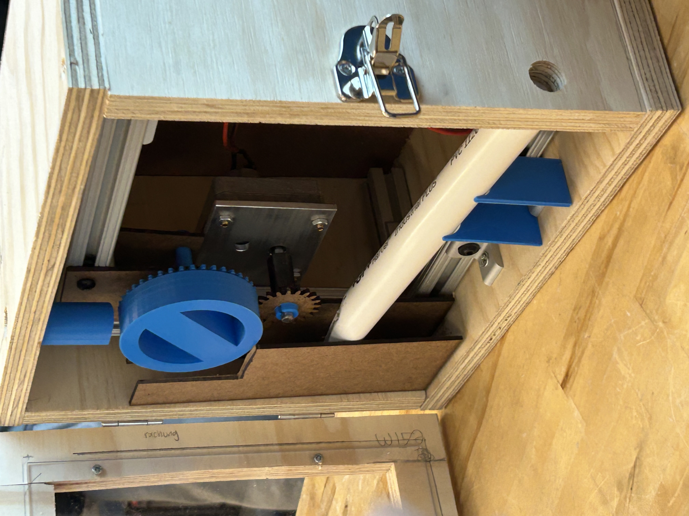

the idea
The prompt was simple: design and assemble a mechanism that delivers a pill once per minute. Two marbles stood in for the pills, we were given a motor that turns at a fixed 2 rpm, and we had to build inside a provided box with set positions for the input and output holes.
We decided on a spinning pill wheel that makes exactly one rotation per minute, so one pill is released per cycle. Since the motor runs at 2 rpm, we needed a 1:2 gear reduction, and we let gravity carry each pill from the wheel down a pipe to the output hole.
what we made
- small gear on the motor: laser cut
- large gear: 3d printed
- pill wheel: 3d printed
- spacer for the motor gear: 3d printed
- delivery pipe: pvc
my part
I assisted with fabrication, as well as some CAD. I quickly modeled the top delivery pipe and fabricated the 3d printed parts. The overall design were team decisions.
designing + building
things working and breaking
Our first pill wheel didn't leave enough clearance around the pill hole, so the marble wedged in place and gravity couldn't drop it. We tried sanding the hole larger, but the gap we needed was far more than sanding could safely remove, so we refabricated the part with a bigger hole instead.


making it
The rest of the build went smoothly. The gear mesh tested well, the gear spacing lined up, and the top pipe feeding the pill wheel turned out looser than planned but still worked fine.

test day
On test day, every component worked within the specified conditions. Our timing was off by about 1-2 seconds per pill, which we expected because of the short travel time down the pipe.
continuous improvement
If we built it again, I'd change three things. First, I'd tilt the delivery pipe at a steeper angle, since a non-round object at our angle might have struggled to roll through. Second, I'd tighten the fit of the top pipe feeding the pill wheel, which was looser than it needed to be. Third, I'd cut each part to fit its neighbors more closely, which would also make the whole assembly look cleaner.
This was one of a few hands-on builds from my first year. If you want to see more, check out the hand-powered flashlight or the counting lines mobot in the playground.
- tools
- solidworks, laser cutter, 3d printer
- timeline
- fall 2025 over 3 weeks
- role
- team of 4: fabricator + cad
- course
- 24-101 fundamentals of mechanical engineering
- status
- completed for final project